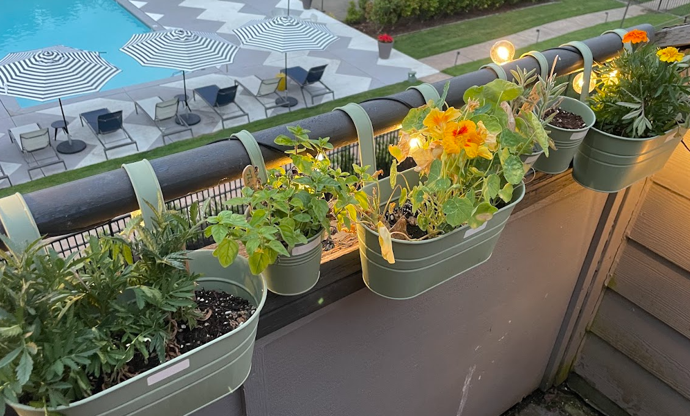

Welcome in!

Laila's Balcony Railing Garden, picture taken in April of 2026.
No matter what space you do or don't have, you can garden! There's all sorts of options to explore, from your gardening zone to types of planters. Paying attention to how much direct/indirect sunlight your windowsill, garden, or yard has is also a key factor, and it doesn't hurt to get to know your local pollinators and neighbors to include plants that can deter pests and attract bugs that help establish your garden's ecosystem.
Let's start by looking at your environment - specifically at the items listed above. Use Laila's 7x7foot garden, for instance. She lives in a southwest-facing balcony, and after paying extra attention and keeping track of time when possible, she learned that the plants on top of her table and attached to her railing get 7-9 hours of sunlight a day, meaning her more hearty plants should take root here. This includes nasturtiums, strawberries, and marigolds. Along the base of the railing, there's natural shade from the position so there's only about 2 hours of sunlight a day when it's directly above. This means it's a good location for plants that prefer colder, damper environments. You can easily look up online, "I live in XYZ, what gardening zone am I in?"and google can pop a reply right back out to you, which can point you to the kind of plants you can get invest in, from seedling or from a nursery directly!
Now put it all together and invest in some vertical gardens - such as pallets, hanging baskets, or other pots and containers you can find. There's lots of cheap options secondhand, such as Facebook Marketplace and Offerup, giving you more budget for your seeds or plants. Once you've established what your garden area can support, you just get planting and experimenting! A key factor of gardening is failing, learning why it failed, and repeating. Despite my thriving garden during spring and summer, the heat got to a lot of my plants and I learned that there are some I should have transferred inside to prevent the dirt from drying out, resulting in the soil not retaining water nearly as much as it should and killing a few of my plants. I also came across a caterpillar on my nasturtiums that ate through the leaves! But now I know to keep an eye on upcoming weather, check for bugs, and a pro tip - some plants love being bullied! Shake them around, trim the ends off your herbs to encourage growth, and simulating rain can all get your plant happy!
Getting Started
If you're looking to start your own small scale garden, instructions can be found on this page.
Click here to get started!Seasonal Planting
Different plants grow optimally in different seasons. See this page for more details.
See this season's plants!